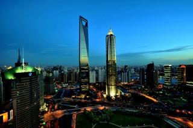

A világ 10 legmagasabb épülete
- A Burj Khalifa – Dubaj tornya
- Makkah Royal Clock Tower Hotel – Szaúd-Arábia legmagasabbja
- One World Trade Center – New York új büszkesége
- Taipei 101 – Tajvan szeme
- Shanghai World Financial Center – Kína neves felhőkarcolója
- International Commerce Centre – Hongkong kereskedelmi palotája
- Petronas Tower 1–2. – Kuala Lumpur ikrei
- Zifeng Tower – Kína csillagvizsgálója
- Willis Tower – Chicago megmászható magassága
1. A Burj Khalifa – Dubaj tornya

Az arab felhőkarcoló a maga 829,8 méterével jelenleg az emberi kéz alkotta legmagasabb épület a világon. Az építési költségei mintegy 1,5 milliárd USA dollárt kóstálnak, 900 lakás található benne, és még csak a fele kelt el – tehát lehet a költözésen gondolkozni. Az épület egy csodálatos park kellős közepén magasodik, és a tetején természetesen kilátó is van.
2. Makkah Royal Clock Tower Hotel – Szaúd-Arábia legmagasabbja

A 600 méter magas hotel Szaúd-Arábiában, Mekka városában található, és az épületegyüttes egyben a legnagyobb óratorony is a világon. A fellegvár egy domb tetején áll, ahonnan tökéletes kilátás nyílik a híres Nagy Mecsetre. A torony tetején található hatalmas óra már az épülettől huszonöt kilométernyire kirajzolódik a távolban.
3. One World Trade Center – New York új büszkesége

A 104 emeletes felhőkarcoló pontosan a 2001. szeptember 11-én leomlott elődje helyére épült, és 541 méteres magasságával a város új büszkesége. Az utolsó építési elemet a napokban kapta meg a torony, amely hamarosan megnyílik a közönség számára is. Az alkotók nagyon fontosnak tartották, hogy a One World Trade Center az eredeti torony hangulatát idézze.
4. Taipei 101 – Tajvan szeme

Az 509 méteres Taipei 101 Tajvan legjelentőségteljesebb felhőkarcolója, és nemcsak a méretei miatt, hanem azért is, mert ez egy igazi zöld épület. A fűtést és az áramszolgáltatást egyaránt természetes forrásokból oldják meg, így a kivitelezés számos díjat is bezsebelt. Az épület különlegessége, hogy a 101 emeletből 5 a föld alatt található.
5. Shanghai World Financial Center – Kína neves felhőkarcolója

Az 5 éve épült felhőkarcoló 492 méter magas. Irodák, szálloda, konferenciatermek, lakások és üzletközpont, kilátó és múzeum is található benne, összesen 87 szinten. Persze van rengeteg vendéglátóegység is, tehát maga az épület olyan, akár egy miniváros, és nem is annyira mini!
6. International Commerce Centre – Hongkong kereskedelmi palotája

Hongkong ICC Towere 484 méter magasra nőtt ki a földből, és a kereskedelem ottani palotája. Van benne bevásárlóközpont, bankok, szálloda elnöki lakosztállyal, és az épület tetején található a világ legnagyobb úszómedencéje, természetesen minden igényt kielégítő bárral és étteremmel együtt. Az expresszliftek alig egy perc alatt érnek a földszintről a 103. emeletre!
7–8. Petronas Tower 1–2. – Kuala Lumpur ikrei

A maláj fővárosban épültek a 452 méter magas Petronas-tornyok, amelyek méreteikkel korábban éveken át birtokolták a világ legmagasabb épületei címet. A 88 emeletes tornyok motívumai tükrözik az iszlám művészetet és a muszlim vallást. Az irodák és bevásárlóközpontok mellett az épületek otthont adnak a híres maláj hangversenyteremnek is.
9. Zifeng Tower – Kína csillagvizsgálója

450 méter magas a torony, így nem csoda, hogy még csillagvizsgálót is építettek a tetejére. A 89 emeletes épület alsóbb szintjein irodák és kereskedelmi központ található, az éghez közelebb érve pedig a szórakoztató részlegbe jutunk, ahol számos étterem, bár, mozi és egyéb lehetőségek várnak.
10. Willis Tower – Chicago megmászható magassága

A Willis Tower 25 éven át őrizte a világ legmagasabb épülete címet, és az Egyesült Államokban ilyen téren ma is előkelő helyen áll. Chicago leglátogatottabb turisztikai központja, ahol több mint egymillió ember fordul meg évente. Az épülettel kapcsolatban világhírű eset, hogy egyszer (tapadókorongok segítségével) sikeresen megmászta egy magát pókembernek képzelő férfi.